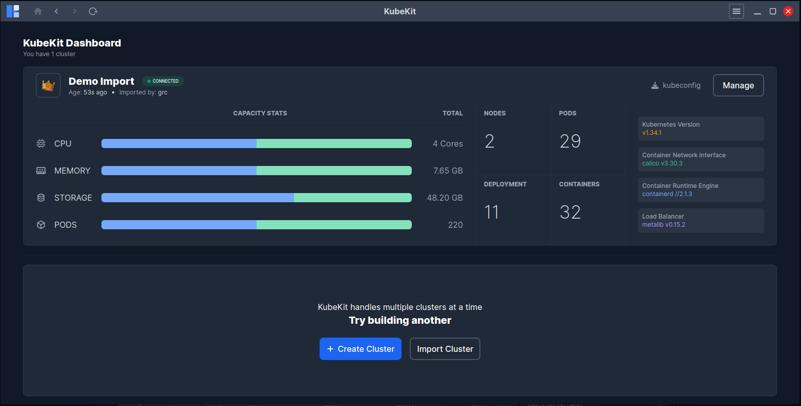

Managing Clusters
KubeKit Dashboard
You can manage multiple cluster using KubeKit simultaneously. All the clusters you have created or imported are listed in the dashboard.

You can download the kubeconfig file of any cluster in the dashboard.
You can manage specific cluster by clicking the Manage button, this will land you to the Cluster Dashboard button.
If a cluster becomes disconnected, you can attempt to reconnect by clicking the Reconnect icon. Also you can remove disconnected cluster from KubeKit application. This will not delete your cluster. Its just detach from KubeKit, it is always safe, you can import it anytime later.
From here, you can check the cluster status (connected or disconnected), and versions of Kubernetes, Container Network Interface, Container Runtime Engine, Load Balancer .
You can also see the total number of Pods, Nodes, Deployments, and Containers.
Additionally, the dashboard displays total cluster capacity metrics such as CPU, Memory, Storage, and Pods.
Cluster Management Options
KubeKit’s left sidebar contains several dedicated sections for managing different components of the cluster. Each section offers a focused view with search, filtering, and management capabilities.
Workloads
The Workloads section displays all running resources within your cluster. Each workload type supports searching, filtering, and management features such as deletion, scaling, and detailed inspection.
Pods
- View all pods across namespaces.
- Search and filter by namespace, node, or status.
- Delete pods by selecting them — a
Deletebutton will appear. - Access pod terminals — see Terminal Access.
Deployments
- Search and filter by namespace.
- Delete or scale deployments as needed.
- Follow Scaling Deployments for scaling instructions.
Replica Sets
- Lists all ReplicaSets.
- Search or filter by namespace.
- Delete by selecting the desired ReplicaSet.
- View details by clicking on its name.
Replication Controllers
- Functionality identical to ReplicaSets.
- Search, filter, delete, or inspect detailed configurations.
Stateful Sets
- Lists all StatefulSets.
- Search or filter by namespace.
- Delete as required.
- Click to view configuration details.
Jobs
- Displays all Kubernetes Jobs.
- Search or filter by namespace.
- Delete Jobs when necessary.
- Click to see more details.
CronJobs
- Similar management features as Jobs.
- Search, filter, delete, or view details.
Daemon Sets
- View, search, and filter by namespace.
- Delete or inspect a DaemonSet by clicking its name.
Config
Configuration resources are critical for defining how workloads behave and interact. In Kubernetes, ConfigMaps, Secrets, ResourceQuotas, and related components define the operational boundaries and configurations of workloads. KubeKit offers an easy way to view, edit, and manage these configurations from a single dashboard.
Config Maps
- Lists all ConfigMaps.
- Search and filter by namespace.
- Delete using the
Deletebutton. - Click on a ConfigMap to open its dedicated page for details and live editing via the built-in editor.
Secrets
- Same management features as ConfigMaps.
- View, edit, and delete Secrets as needed.
Limit Ranges
- Lists all LimitRanges in the cluster.
- Search, filter, and delete them directly.
Resource Quotas
- Manage cluster-level resource usage limits.
- Search, filter, and delete as required.
Priority Classes
- Displays all defined priority classes.
- Search, filter, and manage them as needed.
Pod Disruption Budgets (PDBs)
- Helps ensure availability during node or pod disruptions.
- Search, filter, and delete as necessary.
Leases
- Lists all resource leases.
- Search and delete where applicable.
Network
Networking is fundamental in Kubernetes, governing communication between pods, services, and external clients. KubeKit provides clear visibility into your network configuration and lets you manage all related resources effortlessly.
Endpoints
- Lists all Endpoints.
- Search or filter by namespace.
- Delete endpoints as needed.
- Click an Endpoint to view its details.
Services
- Manage all Services in the cluster.
- Search, filter, and delete directly from the dashboard.
Ingresses
- View and manage all Ingress resources.
- Search, filter, delete, or inspect configuration details.
Ingress Classes
- Lists all Ingress Classes.
- Search, filter, and delete easily.
Network Policies
- Manage and monitor network access rules.
- Search, filter, and delete policies as needed.
Access Control
Access control ensures that only authorized entities can perform actions within the cluster. Kubernetes enforces access management using RBAC (Role-Based Access Control), and KubeKit provides a streamlined way to manage all access-related resources.
Service Accounts
- View all Service Accounts.
- Search, filter, and delete as needed.
Roles
- Lists all Roles in the cluster.
- Search, filter, delete, and view details.
Role Bindings
- Manage relationships between Roles and Service Accounts.
- Search, filter, and delete as required.
Cluster Roles
- View and manage Cluster-wide Roles.
- Search, filter, delete, and inspect details.
Cluster Role Bindings
- Manage Cluster Role Bindings with ease.
- Search, filter, and delete as needed.
KubeKit provides complete lifecycle management of your Kubernetes cluster, from configuration and networking to workloads and access control, enabling a unified, efficient, and transparent operational experience for DevOps and platform teams.